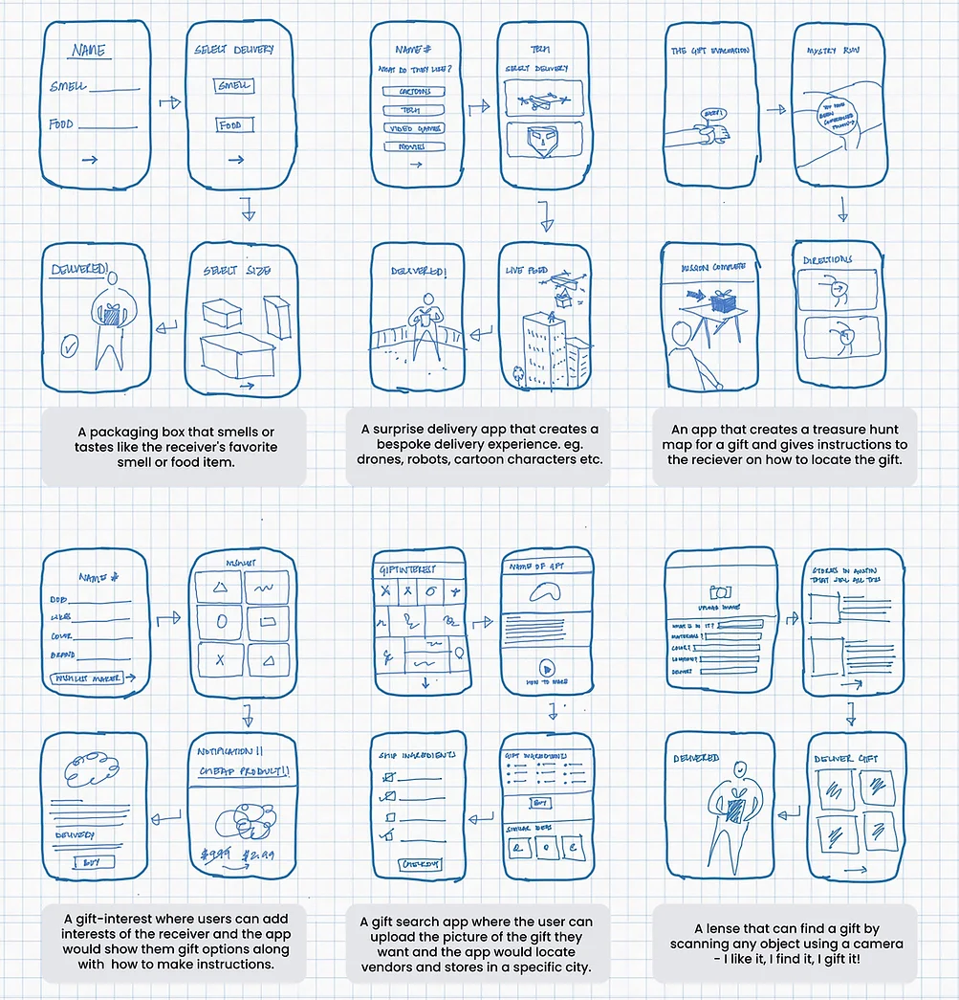
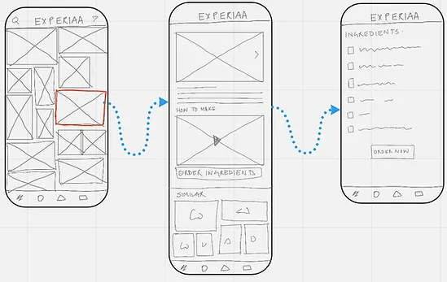
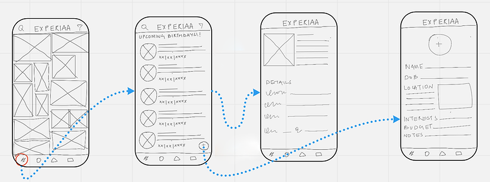
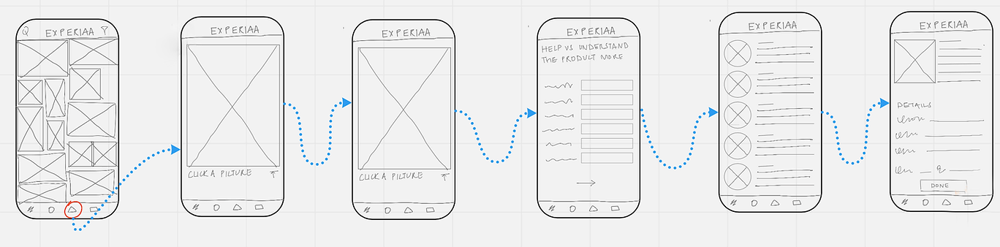
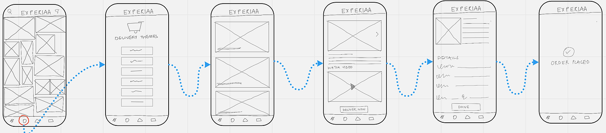

Through the design sprint, we understood how to gain understanding about the user, identify their needs in order to come up with rational and justified solutions to be tested and iterated through user interviews. What else? How to have fun doing that!
The goal of this exercise is to get experience creating a hypothesis, gathering quick feedback to validate or invalidate the hypothesis, iterating upon the feedback received, and testing again.
Initially, before beginning the design journey I went on to define a 'vague' problem statement that would be redefined in the later stages
I personally never attended to such a problem and assumed that the process is easy and does not require any inputs. To overcome these biases we started researching and interviewing candidates about their gift-giving experiences.
The interviews focused on gathering key information and helping users understand:
Based on these curiosities, I interviewed 2 users with completely different approaches and needs. The study helped me discover key insights and identify critical issues in this process.
User #1 loved to make handmade gifts and drew inspirations from mutual interests and needs of the receiver. In terms of the preparation process, they were efficient and had a system.
User #2 had a knack for introducing new products and designs to their friends, they would always find the latest designs and globally trending items to gift their friends. They took the help of Google and Pinterest but struggled in the following sectors -
Let's redefine the problem statement based on user research!
After careful user research and interviews, I discovered the following pain points
The major focus of the process in on the fitt making part and not the giving part
The major focus of the process in on the fitt making part and not the giving part
The major focus of the process in on the fitt making part and not the giving part
The major focus of the process in on the fitt making part and not the giving part
Based on a brief competitor analysis, Amazon.com and Pinterest came out to be the biggest competitors for the product. I focused on creating an enhanced feature set that focuses on the problem and creating a product that was market-fit.
Based on the key insights and pain points derived from the user research, I started iterating various versions of an application with diverse features.
This helped diversify my thinking capabilities - stepping out of pragmatism to ideate newer - ways and takes towards solving the problem at hand. After zeroing in on the top four most interesting ideas, I began sketching to get a feel for what the project would be. In the end, I presented four ideas for a design critique:
Post iteration, I worked towards creating an app named Experiaa! which intended to service the gift-giving process. Planned as an assistant for users, the app developed from a combination of the previously mentioned features and an outcome of a series of user testings.
I used paper wireframes to conduct user testings, a few insights that came out of these 5 people user testing were -
For a user who wants to make a bespoke hand-crafted gift. (one of the journeys)
The user can choose from a wide range of trending gift ideas. Upon selecting one, the user is able to watch tutorials on how to make the gift and also gets an option to purchase the ingredients
This screen helps to keep the user updated with upcoming special dates, reminding them about any gift-giving event. The user can add interests of their friends and the app creates a suggested list of gifts.
In order to help source gifts through pictures, a lens feature helps the user locate vendors and suppliers of a particular product. The user has the option to click a picture or upload it from the gallery
In order to assist with bespoke delivery options, the app gives the user an option to choose from different themes. They can customize the delivery based on the interests of the receiver.
I learned how to take user interviews at a detailed level and further analyze them to create problem statements and formulate solutions to those problems. Getting exposure to the entire product design process instilled a thorough knowledge of each step and a deeper understanding of the design thinking process.
I would change, I would want to focus on one feature instead of taking multiple at once - this will help me design usable and interactive user flow from end to end, currently the application has multiple immersive features in it - I would rethink the MVP plan of the product and create a phasing for the same. Since it was a short duration sprint, I could not focus on design elements such as color palettes and iconography, which I would like to do.
{kind=link}
{kind=link}
{kind=link}
{kind=link}